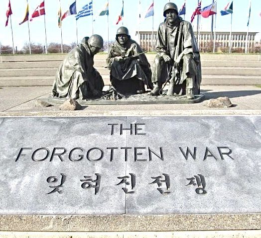
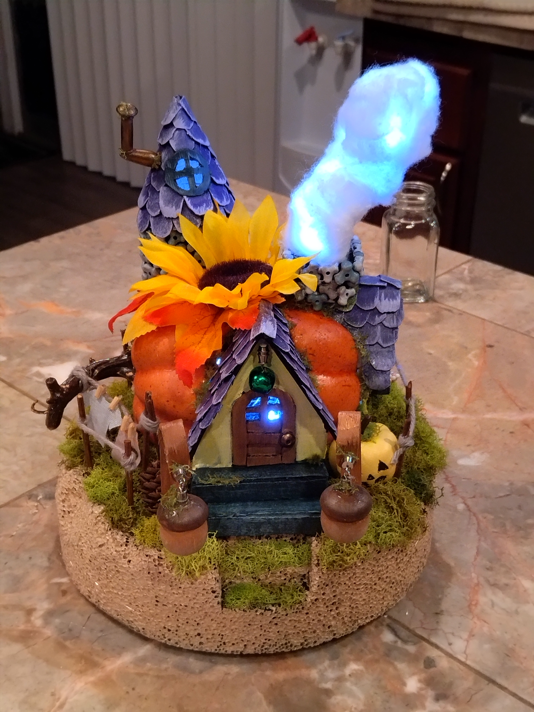

Short Story Example
A short story I've written all stemmed from learning about the Korean War. I had never heard of it previously, but its other title the "Forgotten War" truly stood out. I asked questions such as:
"Who was involved in this war?" "Why was it forgotten?" "Did anything bizarre happen in the war or its aftermath?"
Here's the story if you wish to read it:

Art Piece Example
I had seen many videos of dioramas being made and found the process fascinating. I happened to have a styrofoam pumpkin that I thought would make a good base. My questions were as follows:
"What are common plant related dioramas?" "Can I make it a holiday decoration?" "What materials do I have on hand or would be easy to get?"
Ideas aren't always concept based, but can also include gauging your limits.

School Recipe
For a cooking class I took part in in highschool, I was made to create a dessert recipe with a random set of ingredients I was given. Aside from those guidelines, we were free to be as creative as we wanted. I loved learning how to make a cake roll and wanted to make one again. The questions my group had to ask were the following:
"How do we make use of the more unusual ingredients?" "Can we combine these two items since they are similar?" "Will this items texture be noticed in the cake?"
As a school assignment, the questions also need to factor in the limits within the assignment. Keep the limits in mind, but don't let it crush your inspiration!